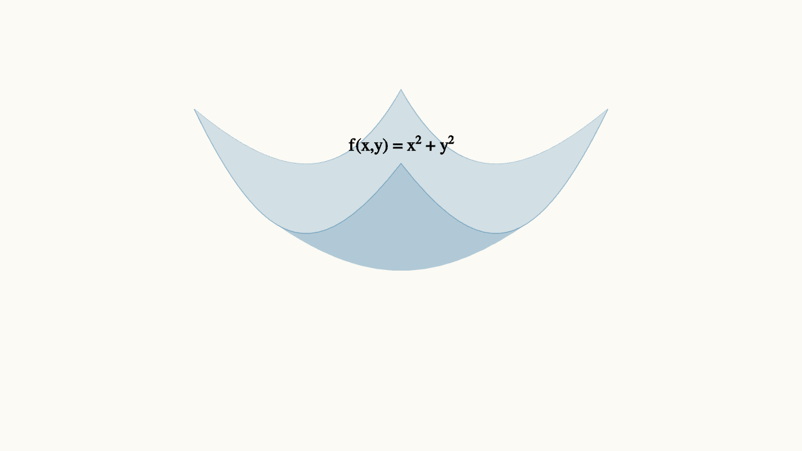
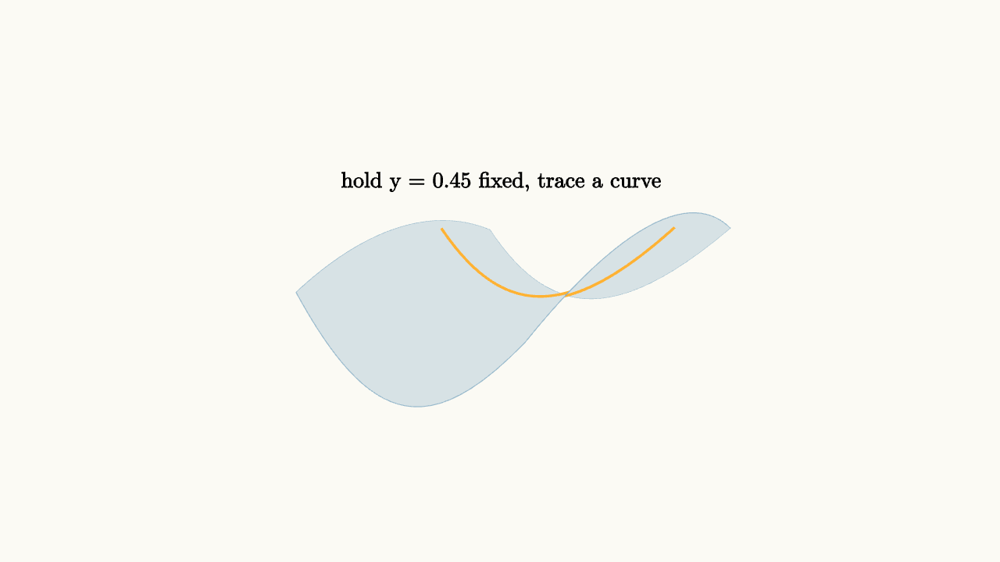

Partial Derivatives Are Slices
Imagine you are standing inside a large greenhouse, trying to understand its temperature. A thermometer in your hand gives you one number. But the temperature depends on where you are: how close you are to the sunny south-facing glass, how close you are to the heating vents along the north wall, how high you are above the floor where warm air pools. Three directions, three ways the temperature changes.
Now a natural question: if you take one step east, how much does the temperature change? Just one step east, holding everything else constant. You do not care, for this one question, about what happens if you also move north or climb a ladder. You just want to know the east-west slope.
That is a partial derivative. And it sounds so obvious when you say it that way that you might wonder why it deserves a name.
The name exists because the answer is genuinely surprising. The east-west slope and the north-south slope at the same point can be completely different. A surface can climb steeply as you walk east while simultaneously descending as you walk north. One number cannot capture both of those realities. You need at least two slope measurements, one for each input direction. And if there are three inputs, you need three.
A function of two variables draws a surface
Let us work with two inputs before tackling more. A function $f(x, y)$ takes two real numbers and produces one. Geometrically, the graph is a surface floating in three-dimensional space: the point $(x, y, f(x, y))$ traces out a shape as $(x, y)$ ranges over the input plane.
A simple example: $f(x, y) = x^2 + y^2$. The output is just the sum of the squares of the inputs. At the origin, the output is zero. As you move away from the origin in any direction, the output grows. The graph is a bowl, or more precisely, a paraboloid, with its lowest point sitting at the origin.

source
background = [0.985, 0.98, 0.955, 1]
camera = Camera([3.2, -3.2, 2.4], [0, 0, 0.4], [0, 0, 1])
mesh bowl = block {
. fill{alpha{0.18} BLUE} stroke{alpha{0.4} BLUE, 0.8} ExplicitFunc2d(|x, y| 0.35 * x * x + 0.35 * y * y, [-1.6, 1.6, 28], [-1.6, 1.6, 28])
. center{[0, 0, 1.4]} orient_to_camera{camera} color{BLACK} Text("f(x,y) = x² + y²", 0.72)
}
"show"
play Fade(0.6)The bowl gives you a nice place to build intuition, because you already know its shape. But let us use a slightly messier surface that does not have perfect symmetry:
This surface rises more steeply in the $x$ direction on one side, while curving the other way in the $y$ direction. It is a gentle saddle with a slight tilt. Perfect for seeing that the two partial derivatives genuinely differ.
Slicing with a vertical plane
Here is the geometric picture that makes partial derivatives click. Take your surface. Now imagine a vertical plane that runs parallel to the $xz$-plane and passes through some fixed value of $y$, say $y = 0.45$. This plane slices through the surface and leaves a curve: a cross-section.
That cross-section is a genuine single-variable function. For our surface, with $y$ fixed at $0.45$:
This is just a parabola in $x$. And the slope of this parabola at any $x$ value is an ordinary derivative, something from single-variable calculus. The slope at $x = 1.0$, for instance, tells you how fast the surface rises as you move in the $x$ direction while staying on the slice $y = 0.45$.
That slope is the partial derivative $\frac{\partial f}{\partial x}$ evaluated at $(1.0, 0.45)$.

source
background = [0.985, 0.98, 0.955, 1]
camera = Camera([3.2, -3.2, 2.4], [0, 0, 0.3], [0, 0, 1])
let f = |x, y| 0.35 * x * x - 0.2 * y * y + 0.25 * x
mesh diagram = block {
. fill{alpha{0.16} BLUE} stroke{alpha{0.38} BLUE, 0.7} ExplicitFunc2d(|x, y| f(x, y), [-1.6, 1.6, 28], [-1.4, 1.4, 28])
. stroke{ORANGE, 4} ParametricFunc(|x| [x, 0.45, f(x, 0.45)], [-1.5, 1.5, 80])
. center{[0, 0, 1.3]} orient_to_camera{camera} color{BLACK} Text("hold y = 0.45 fixed, trace a curve", 0.72)
}
"show"
play Fade(0.6)The orange curve is the cross-section. It lives on the surface but it is a one-variable object. The slope of this curve at any point is the partial derivative with respect to $x$.
The notation and the idea
The partial derivative of $f$ with respect to $x$ is written several ways:
All of these mean the same thing: treat $y$ as a constant and differentiate with respect to $x$ as if you were doing single-variable calculus.
Similarly, the partial derivative with respect to $y$ holds $x$ fixed and differentiates with respect to $y$.
Let us compute both for $f(x, y) = 0.35x^2 - 0.2y^2 + 0.25x$.
For $f_x$: treat $y$ as a constant. Then $-0.2y^2$ is just a constant term (its derivative with respect to $x$ is zero). We get:
For $f_y$: treat $x$ as a constant. Then $0.35x^2 + 0.25x$ is a constant. We get:
At the point $(1.0, 0.45)$:
- $f_x(1.0, 0.45) = 0.70(1.0) + 0.25 = 0.95$
- $f_y(1.0, 0.45) = -0.40(0.45) = -0.18$
So at this specific point on the surface, if you walk in the positive $x$ direction, the surface rises at a rate of $0.95$. If you walk in the positive $y$ direction, the surface falls at a rate of $0.18$. Same point, completely different slopes. This is why one derivative was never going to be enough.
Animating the two slices
Let us see both slices, one in each coordinate direction.
source
background = [0.985, 0.98, 0.955, 1]
camera = Camera([3.2, -3.2, 2.4], [0, 0, 0.3], [0, 0, 1])
let f = |x, y| 0.35 * x * x - 0.2 * y * y + 0.25 * x
"surface only"
mesh surface = fill{alpha{0.15} BLUE} stroke{alpha{0.35} BLUE, 0.7} ExplicitFunc2d(|x, y| f(x, y), [-1.6, 1.6, 28], [-1.4, 1.4, 28])
mesh label = center{[0, 0, 1.3]} orient_to_camera{camera} color{BLACK} Text("a surface over the input plane", 0.72)
play Write(0.8)
"x slice"
mesh xslice = stroke{ORANGE, 4} ParametricFunc(|x| [x, 0.45, f(x, 0.45)], [-1.5, 1.5, 80])
mesh xlabel = center{[0, 0, 1.3]} orient_to_camera{camera} color{ORANGE} Text("x-slice: hold y fixed", 0.72)
play [Fade(0.5, [&xslice]), Trans(0.4, [&xlabel])]
"y slice"
mesh yslice = stroke{GREEN, 4} ParametricFunc(|y| [1.0, y, f(1.0, y)], [-1.4, 1.4, 80])
mesh ylabel = center{[0, 0, 1.3]} orient_to_camera{camera} color{GREEN} Text("y-slice: hold x fixed", 0.72)
play [Fade(0.5, [&yslice]), Trans(0.4, [&ylabel])]The orange curve is the $x$-slice: it shows how the surface varies as $x$ changes, holding $y = 0.45$. The green curve is the $y$-slice: it shows how the surface varies as $y$ changes, holding $x = 1.0$. Two cross-sections of the same surface, carrying completely different slope information.
Computing partial derivatives: the algebra
The computation rule is simple enough to state in one sentence: hold all other variables constant and differentiate normally. The challenge is building the habit of recognizing which variable is which.
Let us work through several examples of increasing richness.
Example 1. $f(x, y) = x^2 + 3xy - y^2$
For $f_x$: the term $x^2$ differentiates to $2x$. The term $3xy$ treats $y$ as a constant coefficient, so it differentiates to $3y$. The term $-y^2$ is a constant in $x$, so its derivative is $0$.
For $f_y$: the term $x^2$ is constant in $y$, so its derivative is $0$. The term $3xy$ treats $x$ as a constant, so it differentiates to $3x$. The term $-y^2$ differentiates to $-2y$.
Notice that $f_x$ contains $y$ and $f_y$ contains $x$. The two slopes are not independent of each other. At a point where $y$ is large, the $x$-slope is large too. The surface is tilting in an interconnected way.
Example 2. $f(x, y) = e^{xy} \sin(y)$
For $f_x$: treat $y$ as a constant. The function is $e^{xy}$ times a constant $\sin(y)$. By the chain rule, the derivative of $e^{xy}$ with respect to $x$ is $y e^{xy}$.
For $f_y$: treat $x$ as a constant. Now both $e^{xy}$ and $\sin(y)$ depend on $y$. Use the product rule:
This can be factored as $e^{xy}(x \sin(y) + \cos(y))$.
Example 3. $f(x, y) = \frac{x}{x^2 + y^2}$
For $f_x$: use the quotient rule with $y$ constant.
For $f_y$: the numerator $x$ does not depend on $y$, so by the quotient rule:
Both partial derivatives exist everywhere except at the origin, where the function itself is undefined.
Three or more variables
Nothing in the definition requires two inputs. If temperature $T$ depends on position $(x, y, z)$ and time $t$, the function $T(x, y, z, t)$ has four partial derivatives:
Each one holds the other three variables fixed and asks how $T$ changes along that one axis. The geometric picture of slicing a surface generalizes to slicing a higher-dimensional object with a hyperplane, but the computation stays the same: treat everything else as a constant.
This is why partial derivatives are so useful in physics. A wave equation describes how displacement $u(x, t)$ changes in space and time simultaneously. A thermodynamic equation might involve pressure, volume, temperature, and entropy. Partial derivatives let you isolate one relationship at a time within a system that is changing along many dimensions.
The interactive slice
Here is a way to build real intuition. Drag the slider to change the height $y_0$ at which we slice the surface. Watch how the cross-sectional curve changes shape, and notice how its slope at $x = 0$ changes as well.
source
param y0 = 0.45
background = [0.985, 0.98, 0.955, 1]
camera = Camera([3.2, -3.2, 2.4], [0, 0, 0.3], [0, 0, 1])
let f = |x, y| 0.35 * x * x - 0.2 * y * y + 0.25 * x
"slice"
mesh surface = fill{alpha{0.12} BLUE} stroke{alpha{0.3} BLUE, 0.5} ExplicitFunc2d(|x, y| f(x, y), [-1.6, 1.6, 24], [-1.4, 1.4, 24])
mesh xslice = stroke{ORANGE, 4} ParametricFunc(|x| [x, $y0, f(x, $y0)], [-1.5, 1.5, 80])
let slope = 0.25
let x0 = 0.0
let y0val = f(x0, $y0)
mesh tangent = stroke{RED, 3} Line(start: [x0 - 0.6, y0val - slope * 0.6, $y0], end: [x0 + 0.6, y0val + slope * 0.6, $y0])
play Write(0.6)
"move"
y0 = -0.8
play Lerp(1.5)At $y = 0$, the parabolic cross-section is symmetric. At $y = 1.0$, the entire curve has shifted downward (the $-0.2y^2$ term pulls it down) while keeping the same curvature in $x$. The tangent line at $x = 0$ has the same slope in both cases (the red line at $x = 0$ has slope $f_x(0, y_0) = 0.25$ for all $y_0$, since $f_x = 0.70x + 0.25$ and the $y_0$ terms vanish at $x = 0$). Meanwhile $f_y$ changes with the slice: $f_y = -0.40 y_0$, which grows in magnitude as $y_0$ increases.
Second-order partial derivatives
Partial derivatives can be differentiated again. A surface has curvature, and the second partial derivatives measure that curvature.
The four second-order partials of $f(x, y)$ are:
The mixed partials $f_{xy}$ and $f_{yx}$ are usually equal. Specifically, if $f$ is smooth (its second partials are continuous), then Clairaut's theorem guarantees:
This remarkable fact says that the order of differentiation does not matter for smooth functions. Differentiate with respect to $x$ first, then $y$, or do it the other way around: you get the same answer.
For $f(x, y) = x^2 + 3xy - y^2$:
The positive $f_{xx}$ means the surface is concave up in the $x$ direction (like a bowl). The negative $f_{yy}$ means it is concave down in the $y$ direction (like an inverted bowl). This combination creates a saddle shape.
What can go wrong
The slice picture makes partial derivatives look simple, and for smooth functions they are. But the slice picture also explains some subtleties.
Consider the function defined by:
Along the $x$-axis, $f(x, 0) = 0$ for all $x$. So $f_x(0, 0) = 0$. Along the $y$-axis, $f(0, y) = 0$ for all $y$. So $f_y(0, 0) = 0$.
Both partial derivatives exist at the origin. But if you approach the origin along the line $y = x$, the function equals $\frac{x \cdot x}{x^2 + x^2} = \frac{1}{2}$, a constant. The function is not even continuous at the origin!
Both partial derivatives can exist at a point while the function behaves badly in other directions. Partial derivatives only look along coordinate axes. They are slices, and a surface can have perfectly behaved coordinate slices while being strange in diagonal directions.
This is not a common problem for functions you encounter in a physics or engineering course. But it is a reminder that the slice picture, powerful as it is, does not capture everything. The full story of "how a function changes in all directions" is called differentiability, and it requires more than just the existence of the two coordinate slopes.
Partial derivatives in the real world
Partial derivatives appear in almost every equation of mathematical physics.
The heat equation says that temperature $u(x, t)$ in a rod evolves according to:
The left side is a partial derivative in time: how fast is the temperature changing at this location? The right side is a second partial derivative in space: how curved is the temperature profile? If the profile is curved (like a spike), the heat diffuses out. If it is flat, nothing changes. The equation captures both directions simultaneously.
The wave equation uses the same structure:
The Schrödinger equation, Maxwell's equations, the fluid Navier-Stokes equations - all of them are systems of partial derivatives, relating how things change in different directions simultaneously.
The notation $\frac{\partial}{\partial x}$ is everywhere in science because the physical world is multivariable. Temperature, pressure, velocity, charge density - all depend on multiple coordinates. The partial derivative is the tool that lets you study one direction at a time within that complexity.
Summary: the slice is real
A partial derivative is not an approximation or a workaround. It is a genuine slope, measured along a genuine cross-section of the surface.
When you compute $f_x(a, b)$, you are: 1. Fixing $y = b$, which gives you a specific curve on the surface. 2. Finding the slope of that curve at $x = a$, which is an ordinary derivative.
When you compute $f_y(a, b)$, you do the same thing in the other direction.
The two slopes together begin to describe the surface's behavior near $(a, b)$. They are the building blocks from which the gradient, the tangent plane, and the full local geometry of the surface will be constructed in the essays that follow.
The key habit to develop: whenever you see a function of multiple variables and you want to understand how it changes, ask "in which direction?" Each direction gets its own slice, and each slice gets its own slope. The surface does not have one slope. It has as many slopes as there are directions to move.